2D gear and body renders
Full-render overhead images. Body examples use a −2 mm outer-contour offset.
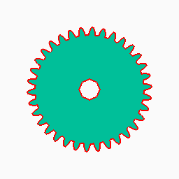
Bezier — Gear
Bezier — Body (−2 mm)
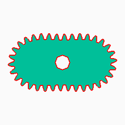
Cassini — Gear
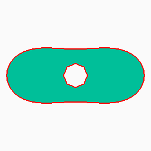
Cassini — Body (−2 mm)
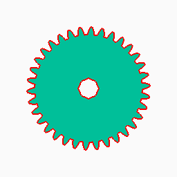
Circle — Gear
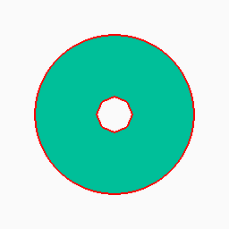
Circle — Body (−2 mm)
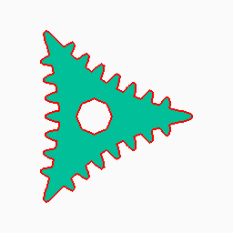
Cusp — Gear
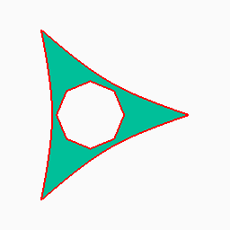
Cusp — Body (−2 mm)
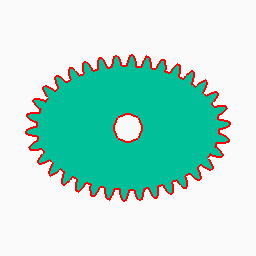
Ellipse — Gear
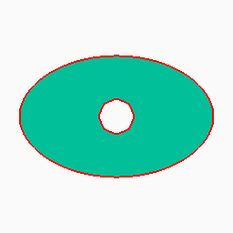
Ellipse — Body (−2 mm)
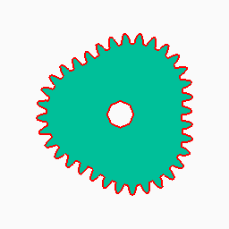
Epitrochoid — Gear
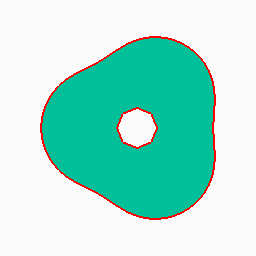
Epitrochoid — Body (−2 mm)
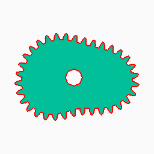
Fourier — Gear
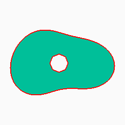
Fourier — Body (−2 mm)
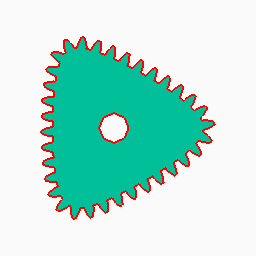
Hypotrochoid — Gear
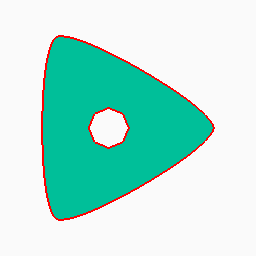
Hypotrochoid — Body (−2 mm)
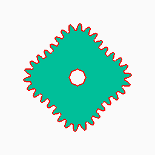
Lobed — Gear
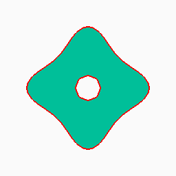
Lobed — Body (−2 mm)
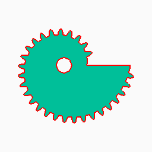
Logarithmic Spiral — Gear
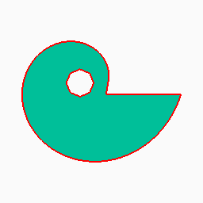
Logarithmic Spiral — Body (−2 mm)
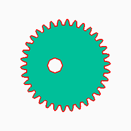
Pascal — Gear
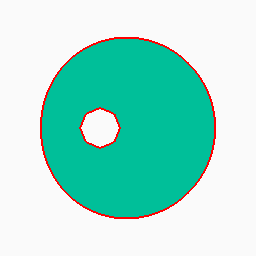
Pascal — Body (−2 mm)
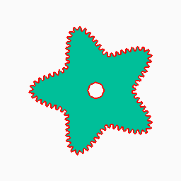
Superformula — Gear
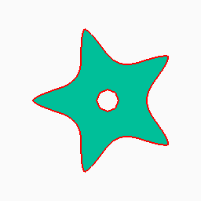
Superformula — Body (−2 mm)